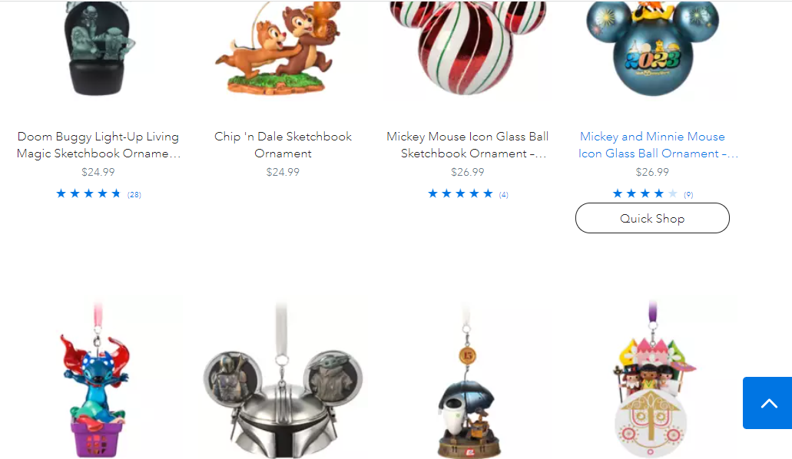

White space
Disney shop In this image we see that they see that they use white space to make there items stand out way more. This is used to get people more intrested into buying there products.
Here the rule of thrids is used to arainge the images of the products, the price, and the purchues button into a grid to make it the most pleaseing way for the eyes. And alows us to be more intrested in the products that they sell.
In this image we see that they see that they use white space to make there items stand out way more. This is used to get people more intrested into buying there products.